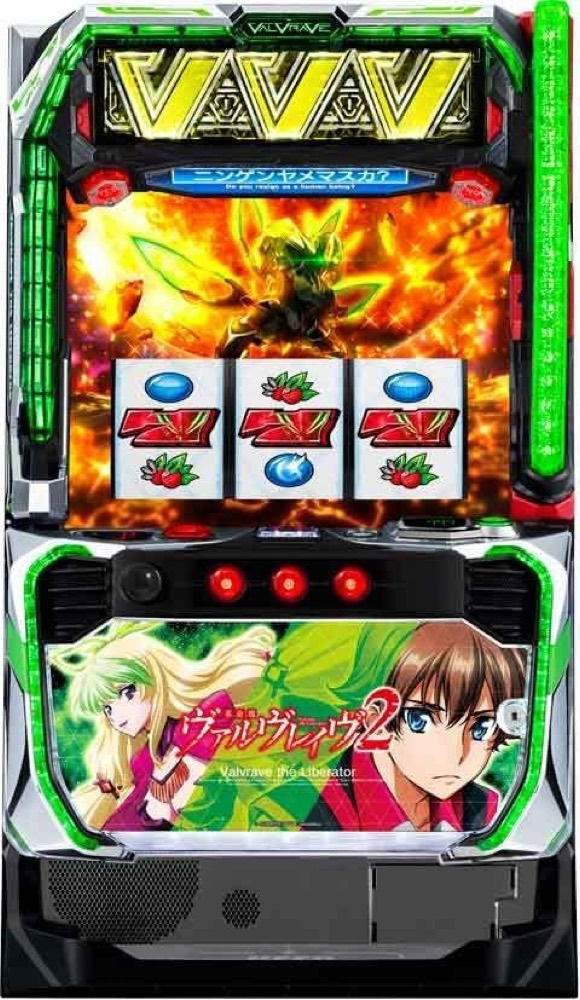

Lパチスロ 革命機ヴァルヴレイヴ2
ハラキリチャレンジを3連し、超革命RUSHへ。
- 導入
- 2025年11月
- メーカー
- SANKYO
- 分類
- パチスロ
主要スペック
高純増ATと高継続の上位ATを搭載した大型ホールの主力機。CZ・ボーナスから革命RUSHへ進み、3セット継続で超革命RUSHを目指します。
- CZは全設定約1/324、初当り合算は約1/476〜1/456
- 実機設定は1・2・4・5・6の5段階
- 革命RUSH約75%、超革命RUSH最大約90%継続
Lパチスロ 革命機ヴァルヴレイヴ2の見どころと計算条件
高純増ATと高継続の上位ATを搭載した大型ホールの主力機。CZ・ボーナスから革命RUSHへ進み、3セット継続で超革命RUSHを目指します。
スマスロ ヴヴヴ2を数字で早分かり
共闘Vチャレンジから革命RUSH、超革命RUSHまでの流れと、設定ごとの結果差を固定レートで比較できます。
実機どおり設定1・2・4・5・6を抽選
通常設定は1・2・4・5・6の5段階で、設定3と設定Lは抽選しません。CZは全設定約1/324、初当り合算は設定1約1/476から設定6約1/456までの公開値を使います。
初当り差は比較的小さい一方、出玉率は設定1の97.7%から設定6の114.9%まで差があります。シミュレーターは選ばれた設定を結果とランキングへ表示します。
革命RUSHから超革命RUSHまで
共闘Vチャレンジ、革命RUSH、革命の剣、ハラキリチャレンジ3連、超革命RUSHを一連の演出へ整理しています。上位へ届く前の終了と、最大約90%継続の上位結果を比べられます。
内部モード、全役、引き戻しや有利区間の詳細は再現していません。公開されていない上位到達率の設定差も加えず、全設定で共通条件です。
平均476Gと高コイン単価
設定1の初当り476Gと32.7G/50枚を基準にした平均投資目安は約15,800円です。46枚貸し・5.2枚交換で統一し、コイン単価4.2円は高い振れ幅を示す補助指標として表示します。
平均より早く当たっても上位へ届かない結果と、深い投資から超革命RUSHで伸びる結果があります。初当りの早さだけでなく最終差枚と収支を合わせて確認してください。
結果画面で確認するポイント
- 5段階設定ごとの初当りGを比較する
- 革命の剣による獲得枚数の増加
- ハラキリチャレンジ3連から上位へ進めたか
- 超革命RUSH終了までの差枚と収支
平均Gと投資目安の計算
掲載する革命RUSH初当り約1/476は設定1基準です。当サイトでは50枚あたり32.7G、1,000円46枚貸しの固定条件から、設定1基準の平均投資目安を約15,800円と計算します。
シミュレーターでは設定1・2・4・5・6を均等抽選します。設定1・2・4・5・6で公開されている初当り値を個別に使います。公開されていない特化ゾーン・上位到達率の設定差は加えません。 換金は5.2枚交換で固定し、結果とランキングに設定を表示します。
シミュレーション結果の見方
当るまで共闘Vチャレンジ・革命RUSHまでのゲーム数
設定設定1・2・4・5・6から抽選された今回の設定
上位到達ハラキリチャレンジ3連と超革命RUSHへの到達
最終収支差枚と5.2枚交換の収支目安
結果は自動で「マイ記録」に保存され、同じ機種を何回試したか、最高収支、勝率をあとから確認できます。
簡易シミュレーターについて
共闘Vチャレンジ・革命RUSH・超革命RUSHの流れを固定条件で体験できます。JavaScriptを有効にすると、この位置にシミュレーター、演出、マイ記録、機種別ランキングが表示されます。
結果は娯楽・確率理解のための参考表示です。金銭的価値や交換価値はなく、実際の勝敗や収支を保証しません。18歳未満の方の利用はお控えください。
スマスロ ヴヴヴ2のよくある質問
スマスロ ヴヴヴ2はどんな台？
高純増ATと高継続の上位ATを搭載した大型ホールの主力機。 CZは全設定約1/324、初当り合算は約1/476〜1/456が主な確認ポイントです。
スマスロ ヴヴヴ2の平均投資目安は？
設定1基準の革命RUSH初当り約1/476と、50枚あたり32.7G・46枚貸しの固定条件から、平均15,800円を目安として表示します。実際の設定や遊技状況で結果は変わります。
設定とゲームの流れはどう抽選する？
開始時に設定1・2・4・5・6から1つを均等抽選し、共闘Vチャレンジ、革命RUSH、ハラキリチャレンジ3連、超革命RUSHの順で到達を判定します。設定は最終結果とランキングに表示します。
収支はどう計算する？
1,000円46枚貸し・5.2枚交換の固定条件で投資、換金、収支目安を計算します。実店舗の再プレイ、持ちメダル、端数処理は含みません。